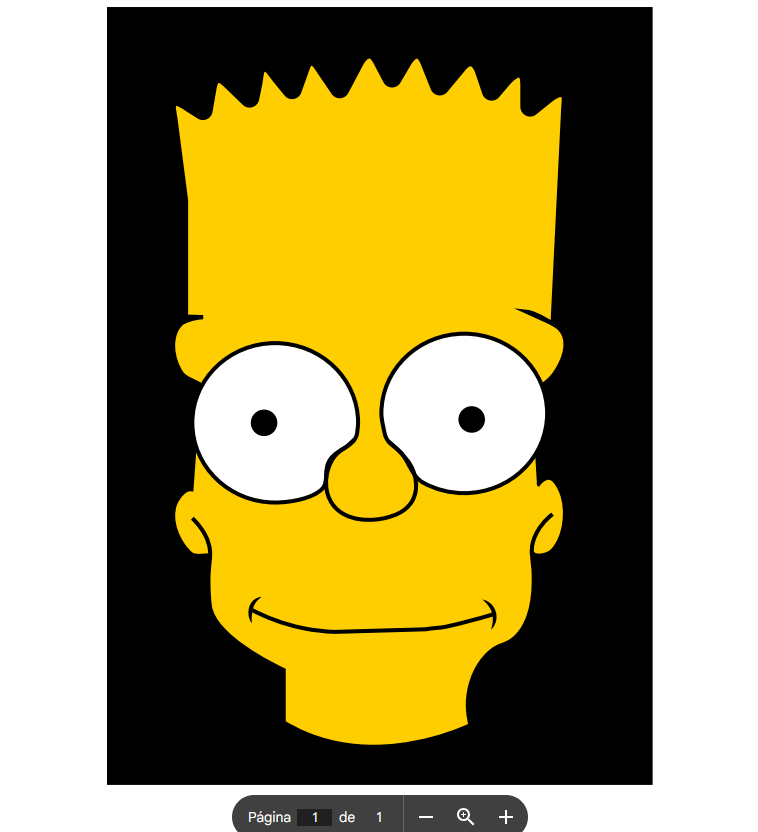

2DO PARCIAL

Participación 1: Pathfinder
En esta actividad, el objetivo fue entender la lógica del panel Buscatrazos para optimizar el diseño. Aprendí que no hace falta dibujar formas complicadas desde cero, basta con saber combinar figuras básicas. Por ejemplo, entendí la diferencia entre "Unificar", que fusiona todo en una sola pieza, y "Menos frente", que sirve para recortar huecos. Lo más importante que me llevo es que el Buscatrazos es clave para que los archivos queden limpios, sin trazos encimados y con un acabado profesional.

Práctica 4: Mickey Mouse
Para este ejercicio, el reto fue aplicar la geometría al dibujo de un personaje. Lo que hice fue construir la base de la cabeza y las orejas con elipses perfectas y luego usar la función de "Unificar". Para los detalles del rostro, como los ojos y la boca, utilicé la Herramienta Pluma, lo que me sirvió para practicar cómo cerrar trazados y manejar las curvas. Aprendí que combinar el Buscatrazos con la pluma ahorra muchísimo tiempo y hace que el personaje se vea mucho más simétrico y equilibrado.

Práctica 5: Bart Simpson
Con la tarea de Bart Simpson, el aprendizaje se centró en el manejo de capas y el control del trazo. Primero hice todo el delineado con la pluma, cuidando los ángulos del cabello y la fluidez del cuerpo. Lo más útil de esta práctica fue aprender a organizar el archivo: separar el contorno del relleno y usar capas para que cada parte del personaje fuera fácil de editar. Al final, logré entender que el grosor de la línea es lo que le da esa estética de caricatura real, y que tener un orden en el panel de capas es vital para no perderse en el proceso.